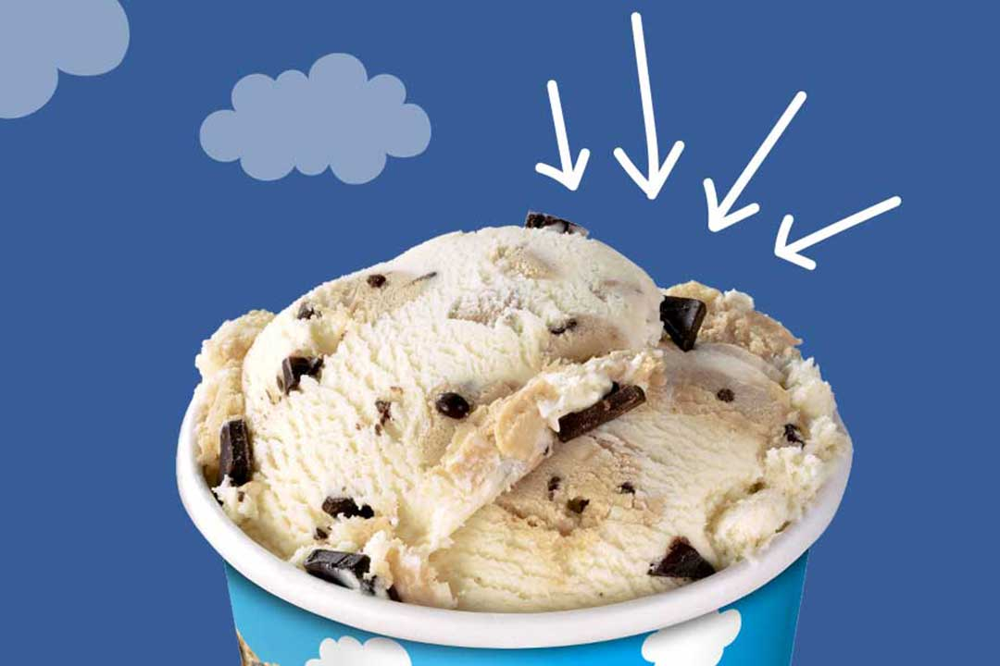
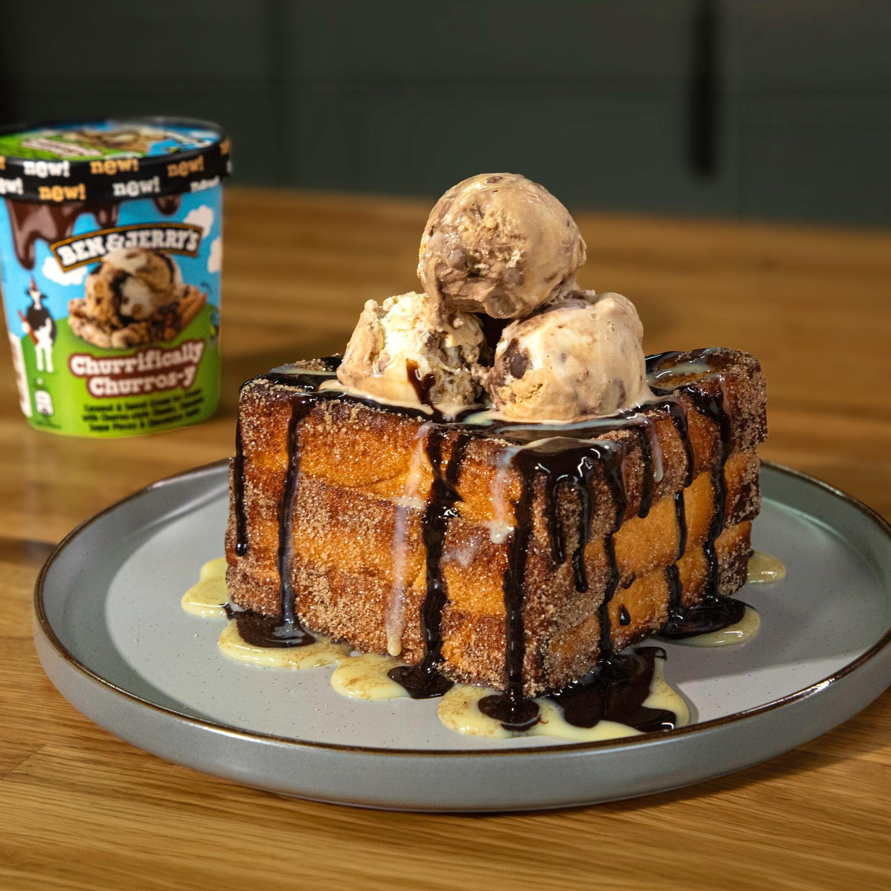
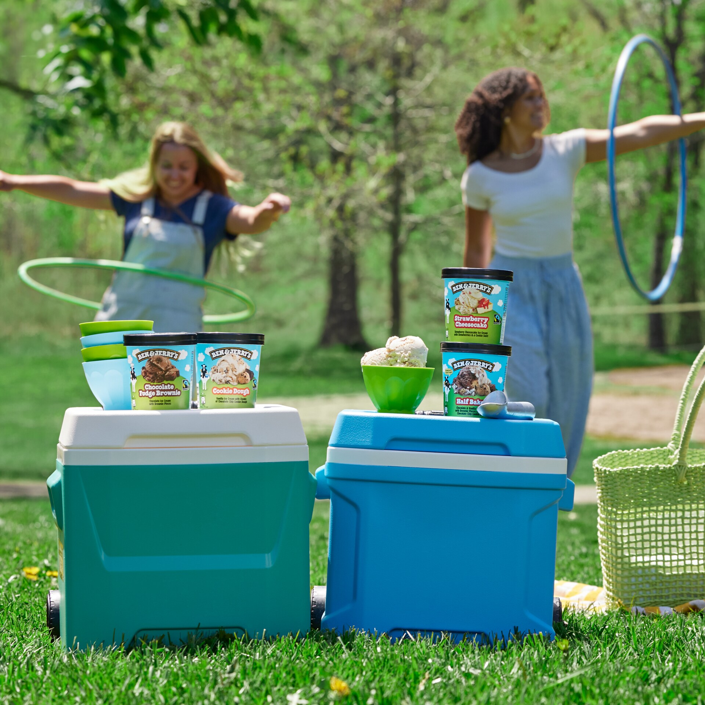
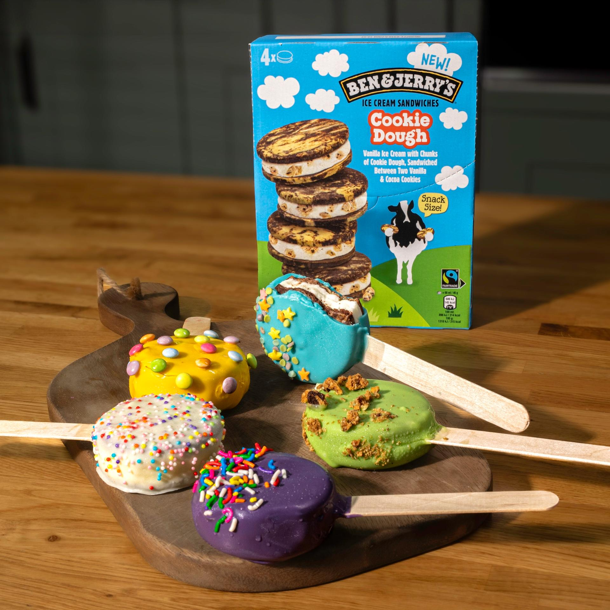
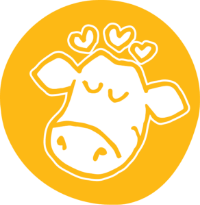

Verkooppunten
Vind jouw dichtsbijzijnde supermarkt of laat Ben & Jerry's bezorgen door een restaurant of bezorgpartner
Vind nu!400 kinderen wonen al jaren in Nederland, maar weten nog steeds niet of ze mogen blijven. Dat vinden wij ijskoud fout! Jij ook?
Kom in actie!
Vind jouw dichtsbijzijnde supermarkt of laat Ben & Jerry's bezorgen door een restaurant of bezorgpartner
Vind nu!Wij spreken ons uit over onderwerpen die ons nauw aan het hart liggen. Ontdek hoe jij kan helpen.
Ontdek meer over onze waarden
Deze indulgente twist op Hong Kong‑style French toast gevuld met chocolade, bak 'm goudbruin en rol het daarna door kaneelsuiker voor een churro‑inspired finish. Afgetopt met gecondenseerde melk, chocoladesaus en royale scoops Ben & Jerry’s Churrifically Churros‑y is dit een dessert dat groots is in comfort en nóg groter in smaak.
Meer lezen
Badkleding en swirls? Slippers en fudge chunks? Doe de quiz en ontdek welke Ben & Jerry’s-smaak perfect past bij jouw zomerse vibe.
Meer lezen
Nodig je vrienden uit, verzamel iedereen en duik in deze Cookie Dough Sandwich Pops — bevroren, in chocolade gedipt, bedekt met sprinkles en gemaakt om samen het plezier te delen.
Meer lezen
Onze ingrediënten worden met zorg uitgekozen en laten ons ijs (h)eerlijk smaken.
Ons doel is welvaart te creëren voor iedereen die verbonden is met ons bedrijf.
Onze missie en waardenWij spreken ons uit over onderwerpen die ons nauw aan het hart liggen.
Onderwerpen die wij belangrijk vinden